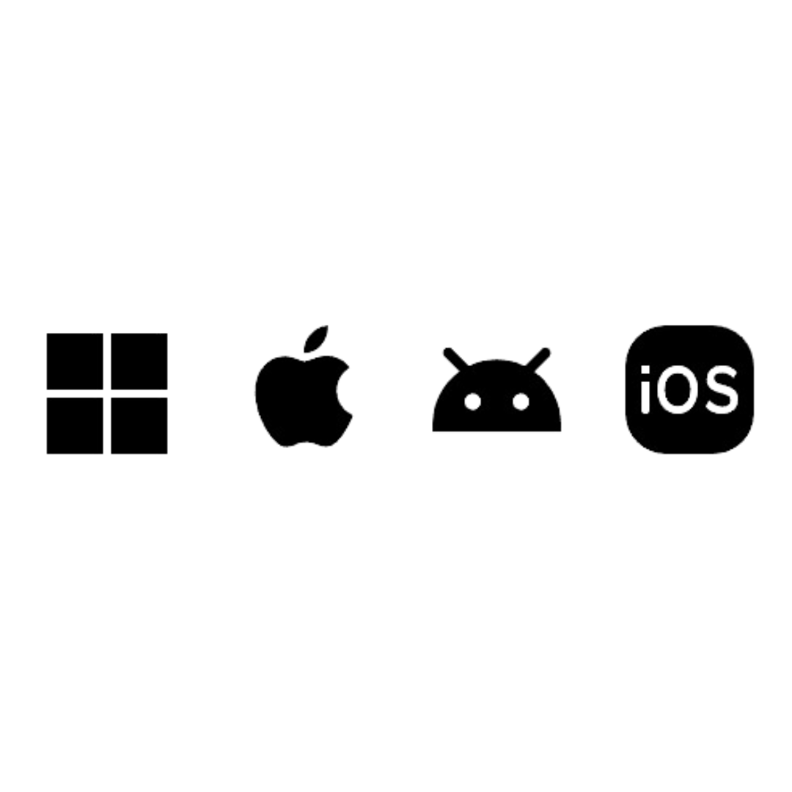

Página 1 > Sobre o Kryos
KRYOS
Na era digital, a proteção dos seus dados é mais importante do que nunca. O KRYOS foi desenvolvido para oferecer uma segurança robusta e
eficaz contra ameaças online. Com tecnologia avançada de detecção de malware, nossa solução identifica e neutraliza vírus, trojans e outras
ameaças em tempo real, garantindo que seus dispositivos permaneçam seguros.
Fundada em 20 de março de 2024, a empresa é liderada pelo CEO Nikolas Lopes da Silva,
juntamente com os Co-CEOs Jonathan Ruan Barros Acederro e Guilherme Mayer Pinto. Juntos, eles desenvolveram um sistema que não
apenas protege os dispositivos dos usuários, mas também oferece uma seção educacional sobre as ameaças que permeiam a
navegação digital. Essa iniciativa visa capacitar os usuários a se manterem informados e seguros no ambiente online.
"Apenas um Sistema de Segurança Anti-malware não seria o suficiente, precisamos de algo que auxilie ainda mais os usuários, que
faça eles terem noção de tudo, que consigam se proteger e evitar ataques."
(SILVA, Nikolas Lopes da, CEO - 14/02/2023)
Página 2 > Técnologias
Segurança & Técnologias
A segurança de KRYOS possui tecnologias abrangentes para que a proteção dos dispositivos de cada usuário seja primordial, juntamente com com um ambiente mais seguro. Como tais tecnologias:
- Análise de Assinaturas: O software verifica arquivos em busca de padrões conhecidos de malware. Um banco de dados atualizado permite identificar ameaças reconhecidas rapidamente.
- Análise Heurística: O antivírus avalia ações suspeitas e padrões de comportamento que podem indicar a presença de um malware, mesmo que não tenha uma assinatura conhecida.
- Proteção em Nuvem: A análise em nuvem permite que possa ser vereficado arquivos e comportamentos em tempo real, utilizando poderosos servidores para processar dados. Isso resulta em uma detecção mais rápida e uma proteção sempre atualizada.
- Análise Comportamental: Similar à heurística, essa técnica monitora a atividade dos programas em execução. Se um aplicativo começa a agir de maneira suspeita, o antivírus pode agir proativamente para bloqueá-lo.
- Sandboxing: Essa tecnologia executa arquivos suspeitos em um ambiente isolado para observar seu comportamento sem risco para o sistema principal. Se o arquivo se mostrar malicioso, ele é eliminado antes de causar danos.
- Firewall Integrado: O firewall monitora e controla o tráfego de entrada e saída, ajudando a bloquear acessos não autorizados e proteger contra ataques externos.
- VPN: É uma tecnologia que cria uma conexão segura e criptografada entre o seu dispositivo e a internet.
Página 3 > Ensino
Aba de Ensino
Esta aba foi criada com o objetivo de proporcionar aos usuários
a oportunidade de aprender sobre as ameaças cibernéticas, como funcionam e tudo o que envolve
esse tema. Com esse conhecimento, os usuários estarão mais preparados para se proteger na Internet,
diante da crescente incidência de ataques cibernéticos e tentativas de golpes.
É fundamental que todos
tenham, pelo menos, uma noção básica para conseguirem detectar, mitigar e evitar essas ameaças. Entre
os pontos relevantes a serem abordados, incluem-se:
- Preparação do usuário contra ataques cibernéticos.
- Explicações e conceitos sobre os tipos de Malwares mais utilizados.
- Exemplos práticos sobre essas ameças.
- Comportamentos e cuidados.
- Precauções e soluções aplicadas.
- Bloqueamento e exclusão.
Página 4 > Download
Instalação
KRYOS possui compatibilidade para diversos sistemas operacionais, com o intuito de acolher todos os usuários. Com sua proteção de ponta e ótimas análises de performance. Um ambiente mais seguro para você e todos que conhece.
Windows
Mac OS
Android
IOS
VPN rápida e ilimitada
Antiphishing
Firewall implementado
Aba de Ensino e Educação
Limpeza de espaço no dispositivo
Gerenciador de senhas
Otimização de desempenho
Verificador de vazamento de dados
Detecção de acesso remoto
Monitor de integridade do disco rígido
Proteção Anti-Virus, Anti-Malware e Anti-Ransomware
Verificação de segurança de senhas